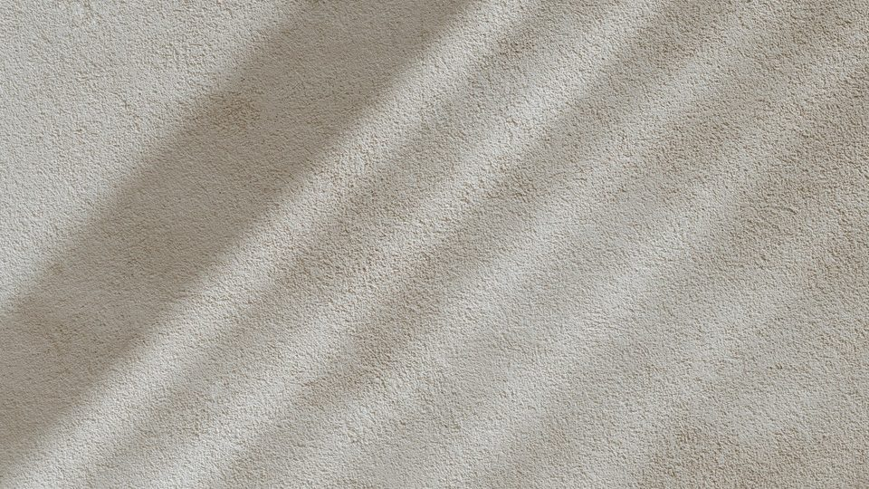
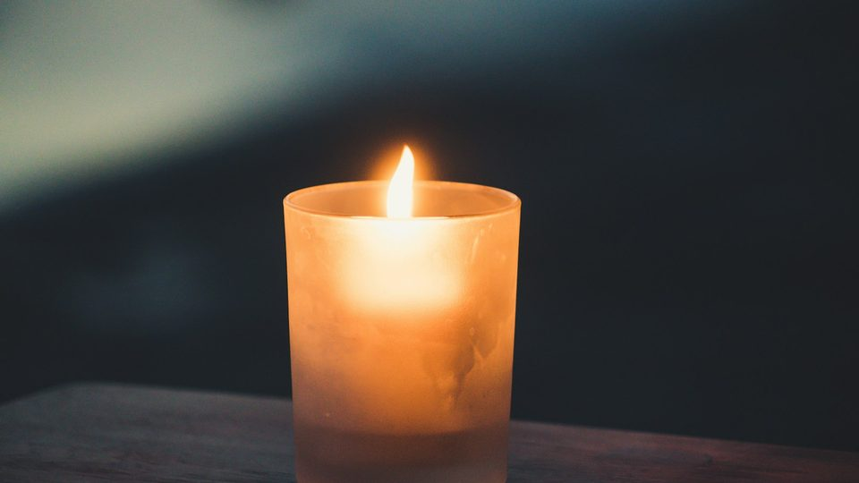
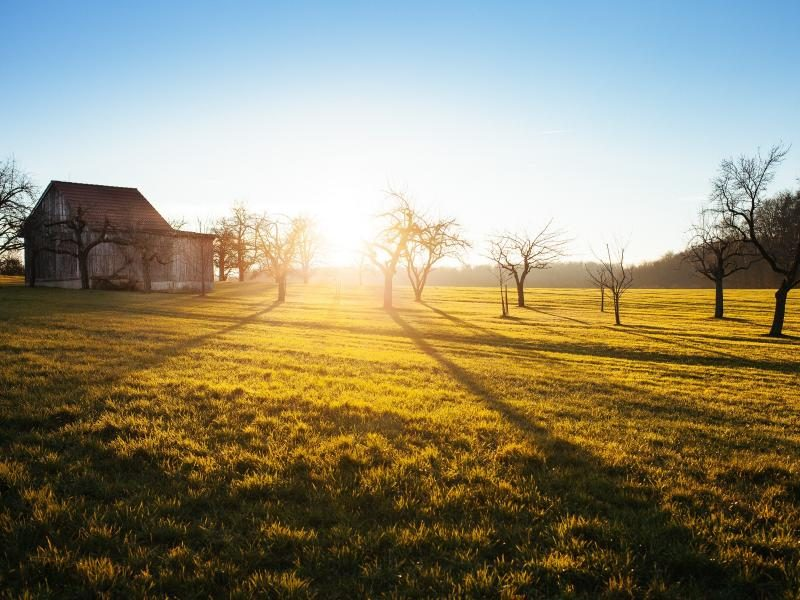

Preparing your toddlers for a new sibling
A scavenger hunt, four clues written in the car, a pink cake, and two small children who had been praying for a sister since one of them was three.
Happy Hearts at Home
Three babies born, every one of them at home, and two that I did not get to keep, with a good deal of learning in between. Karis and Hezekiah were born in our own house. Liberty was born at a birthing house on our midwife’s land, and we stayed the night after. All three were born on a bed. This is where I put all of it, so that another mother reading at two in the morning can find it.
“Who can find a virtuous woman? for her price [is] far above rubies.” Proverbs 31:10

A scavenger hunt, four clues written in the car, a pink cake, and two small children who had been praying for a sister since one of them was three.

Hezekiah arrived weighing nine pounds twelve ounces, and then the room changed very quickly.
Seventeen hours of labour, thirteen of them with no pain, and a watermelon eaten in the birthing pool.

Not advice, and not a course. Five pieces of writing that began as things I told somebody once and then wrote down properly, because I wanted them to be somewhere other women could reach. Our family is about keeping the peace and holding on to what matters, and this is the part of that I can put into words.
If you are reading this because you have lost a baby, or because you are frightened about the birth coming: start here, and then know that the fear is not a character flaw and the noise around you is not evidence.
One letter a month — what the children are learning, what I got wrong last month, and nothing to sell you.
No tracking, no sequence, unsubscribe in one click.